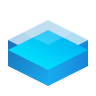

"Datos e Inteligencia Artificial para acelerar tu estrategia digital"
Silos de reportes manuales por país. La dirección tardaba días en consolidar hojas de cálculo para visualizar el inventario global, operando bajo suposiciones.
Visibilidad del 100% en tiempo real. Decisiones fundamentadas en una sola fuente de verdad global, eliminando la incertidumbre en la cadena de suministro.

Microsoft FabricDatos sensibles distribuidos en sistemas desconectados. Riesgos de cumplimiento y auditorías extremadamente lentas por falta de centralización.
Plataforma gobernada unificada. Procesamiento de información de clientes un 80% más rápido con seguridad de nivel bancario nativa.
Necesidad de escala para 50,000 empleados sin comprometer datos confidenciales en herramientas de IA públicas.
Despliegue de "My Assistant". 50,000 empleados ahora resumen, redactan y analizan con IA en un entorno 100% privado y seguro.
Para predecir fallos en ensamble, los datos deben ser 100% fidedignos. "Basura entra, basura sale" es inaceptable en manufactura de precisión.
Data Quality Automatizado. Perfilado de salud en tiempo real antes de llegar a la IA, garantizando precisión milimétrica en la fabricación.
Modernizar rápidamente infraestructuras legadas para definir una estrategia de datos clara a lo largo de toda su cadena de suministro.
Implementación de Microsoft Fabric y Azure AI Foundry para unificar silos de información dispersos, habilitando a la organización a extraer conocimiento estructurado de su cadena de suministro.
Fuente: Gartner Research 2024
Rentabilidad
Agilidad Operativa
Precisión Operativa
Unified Platform for
Generative AI Models
Infraestructura y talento especializado para orquestar modelos de IA y arquitecturas de datos modernas.
Ciberseguridad y cumplimiento normativo integrados en cada capa de su ecosistema de datos.
Contáctenos
Unifica
Potencia
Lidera
Si buscas modernizar tu estrategia de datos, contacta a tu ejecutivo Alestra o mandanos un correo a: